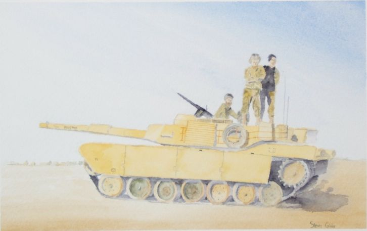

| Type 60 |
|
|  | |
General and Technical Data |
|
|
Unit type: main battle tank Armament: 1 x 150mm cannon; 12.7mm machinegun; 7.62mm machinegun; 2 x 4-tube grenade launcher |
|
| Technical and Historical Notes | |
| Although it could be called the equivalent of any older modelled tank, the Federations Type 60 Main Battle Tank was used up until the UC 0020s, and has been revived as a colony and Lunar city defense unit. Close to identical to its brother the Type 61, the only discernable difference is a single cannon instead of two. Many LMC issue Type 60's have been sealed to be airtight. |
 RPG quick stats sheet
RPG quick stats sheet